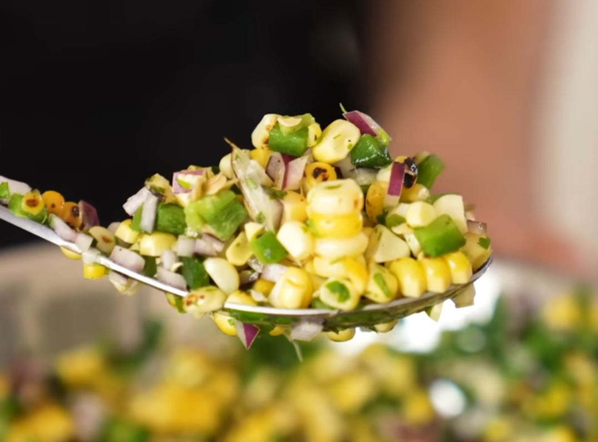

My Corn Relish Recipe

A little bit of burnt goes a long way
This is more than just corn relish, it's CHARRED corn relish.
Using and open flame or grill to char
the corn and jalepeno.
Ingredients
- 4 Corn on the cob
- 2 Jalepeno peppers
- 1 half Red onion
- 2 tbsp Cilantro
- 1 tbsp White distilled vinegar
- Salt and pepper
Steps
- Let the 4 cobs sit on open flame or grill until lightly charred.
- Let the jalepeno's sit on the flame, charring the whole thing.
- Wipe the char off the jalepeno then seed and dice. Add to a
medium sized bowl.
- Slice off the corn on the cob and add to the bowl.
- Dice the red onion half and add to the bowl.
- Add the cilantro.
- Salt and pepper to taste.
- Add the vinegar. Stir and done.
Return to the top.
Return to the main page.